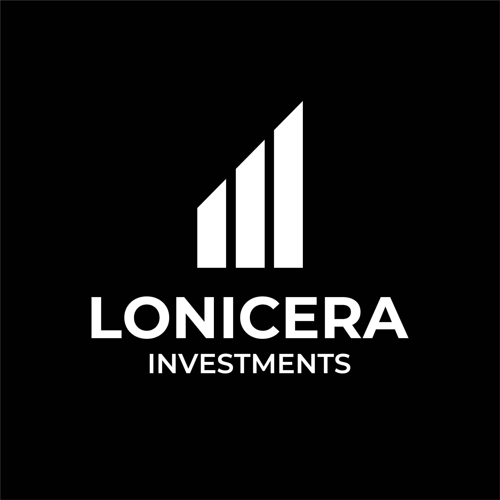

Take a look at some of the projects I've worked on, each one a step forward in my creative and professional journey.
I developed the full visual identity for Sunnee, a sustainable beachwear brand. This included logo design inspired by the sun and sea, a complementary color palette evoking summer, typographic choices for contrast and clarity, and a custom icon set. I also designed social media assets and created brand guidelines to ensure consistent communication across platforms.
download presentationI analyzed accessibility issues in an e-commerce platform, identifying key pain points for users with disabilities. Through personas and user journey mapping, I proposed improvements like optimized layouts, enhanced navigation, and better content structuring to create a more inclusive shopping experience.
download presentationI analyzed accessibility challenges on Ecodream’s website, identifying pain points that affected users with disabilities. Using personas and user journey mapping, I proposed improvements like enhanced contrast, streamlined navigation, and optimized layout structure for a more inclusive experience.
download presentationI conducted a comprehensive UX analysis of Ecodream’s website, thoroughly evaluating usability patterns, content structure, and overall navigation flow. Through heuristic evaluation and competitor benchmarking, I identified accessibility gaps and designed tailored solutions to improve clarity and user interaction.
download presentationI refined the accessibility analysis of Ecodream’s website by identifying pain points through personas and customer journeys. I proposed solutions such as improved navigation, clearer calls to action, streamlined content, and the integration of wishlist and live chat features to enhance usability and user experience.
download presentationI developed high-fidelity wireframes and a detailed wireflow for Ecodream’s website, focusing on usability, accessibility, and intuitive navigation. By refining layouts and structuring key interactions, I optimized the shopping journey, improved product discoverability, and integrated essential features to create a seamless and engaging user experience across the site.
download presentationI adapted Ecodream’s desktop wireframes for mobile, focusing on responsiveness, clarity, and usability. Through a detailed wireflow and sitemap, I mapped interactions and navigation patterns, then refined grid layouts and typography. I also enhanced accessibility and optimized mobile touchpoints to deliver a cohesive and engaging cross-device experience.
download presentationI developed high-fidelity wireframes and a detailed wireflow for Ecodream’s website, focusing on usability, accessibility, and intuitive navigation. By refining layouts and structuring key interactions, I optimized the shopping journey, improved product discoverability, and integrated essential features to create a seamless and engaging user experience across the site.
download presentationI adapted Ecodream’s desktop wireframes for mobile, focusing on responsiveness, clarity, and usability. Through a detailed wireflow and sitemap, I mapped interactions and navigation patterns, then refined grid layouts and typography. I also enhanced accessibility and optimized mobile touchpoints to deliver a cohesive and engaging cross-device experience.
download presentationI crafted a persuasive copywriting project for Il Vestito Verde, aligning the messaging with the brand’s sustainable fashion ethos. Through detailed audience analysis, I tailored the tone to engage young professionals and students passionate about secondhand clothing. I integrated storytelling techniques, applied Cialdini’s persuasion principles, and emphasized the platform’s environmental impact. The result is a compelling narrative that enhances brand authenticity while promoting conscious consumerism in the fashion industry.
download presentationFor Zoom sul Cinema, I developed a complete visual identity — starting from the logo and extending to the color palette, typography, and social media design. I carefully selected bold, cinematic elements to reflect the project's style and tone. The guidelines also include real examples of how the branding comes to life across Instagram, Facebook, and LinkedIn. Everything is designed to keep the visual language consistent, recognizable, and engaging.
download presentation